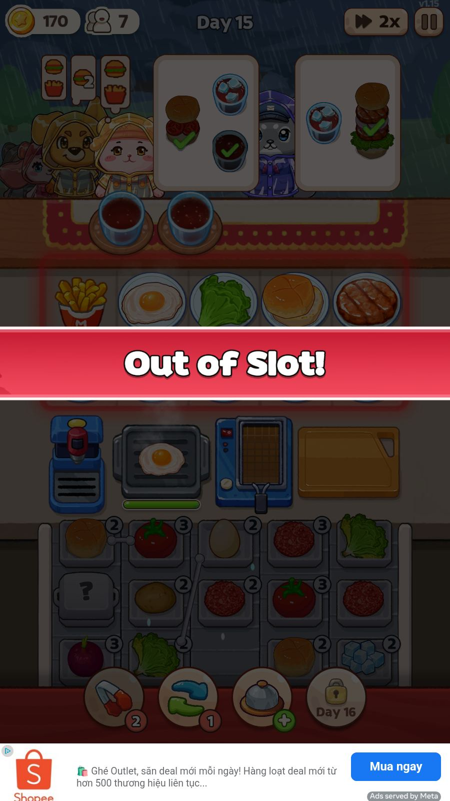
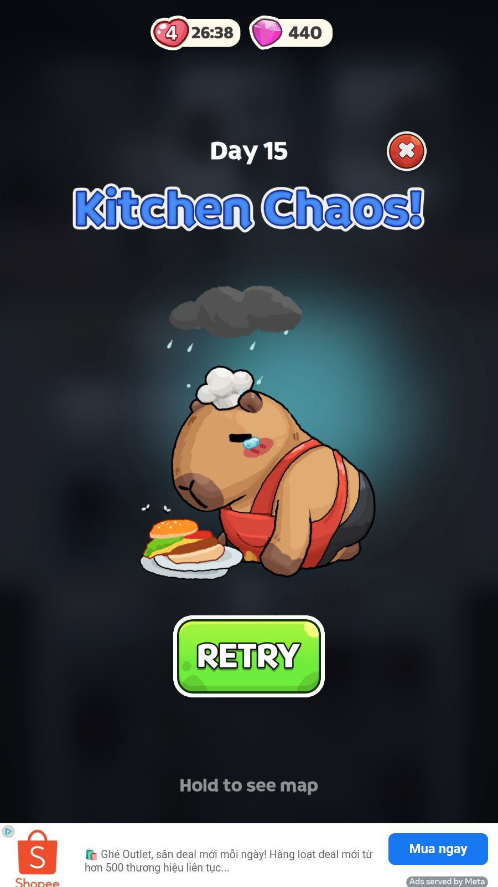

Cứu màn (Save Me)
Mô tả
- Khi sắp thua, game chặn lại và hiện popup cứu màn thay vì thua ngay. Có 3 loại cứu: Out of Slots (đầy ô chuẩn bị), Out of patience (khách hết kiên nhẫn), Out of Move (băng chuyền kẹt).
- Cứu bằng gem (giá tăng theo số lần cứu trong cùng level: 900 / 1.800 / 2.400), bằng quảng cáo thưởng, bằng lượt miễn phí (
numFree), bằng item trong kho, hoặc mua gói Fail Offer (5,99 $) hiện kèm ngay trong popup. - Cứu thành công thì level chạy tiếp, không mất tim; đóng popup hoặc từ chối thì thua (
LevelSaveMeControl.Lose). - 1.15 đổi cách cứu Out of Slots: không còn mở thêm ô phục vụ, mà gom toàn bộ nguyên liệu trong lưới vào một cái túi (
SaveMeBagBoard,SpawnBagSaveMe) rồi trả lại dần.
Thiết kế chi tiết
Tóm tắt thiết kế
- Playtest Hết ô ở Day 15 và Day 20 đều hiện Out of Slots: nút xanh 900 gem và thẻ Fail Offer 5,99 $ (2.700 gem + 4 booster) nằm ngay dưới. Quyết định tiền đến đúng lúc người chơi sắp thua.
- Code Giá gem tăng theo số lần cứu trong cùng level:
saveMePrices[min(n, 2)]= 900 / 1.800 / 2.400. Đếm bằngBoosterCounter.countBoosterByHardCurrency, nên sang level mới giá về 900. - Code Ba loại cứu, mỗi loại một hiệu ứng riêng: túi gom nguyên liệu (Out of Slots), hồi đầy thời gian chờ (Out of patience), gỡ kẹt băng chuyền (Out of Move). Mỗi loại có hàng config riêng nhưng cùng giá 900.
- APK
numFree=0ở cả 3 hàng nên nhánh cứu miễn phí đã code sẵn nhưng chưa bật;maxAds=99nghĩa là gần như không giới hạn quảng cáo cho mỗi loại. - Code Khác 1.11: Out of Slots không còn "mở thêm ô phục vụ", mà dọn lưới vào túi (
SaveMeBagBoard,UISaveMeOutOfSlotAnimmới). Bảng giá 1.11 (900 đến 3.900) thu còn 3 bậc 900 / 1.800 / 2.400. - Live 16/11 17 key RC đang kích hoạt trên server không chứa
save_me_confighaybooster_pack_config: giá và lượt free đang chạy là mặc định APK.
Luồng người chơi từng bước
- Lưới đầy, báo độngGiao diện PlaytestCòn ≤ 2 ô trống thì viền lưới chớp đỏ; đầy 10/10 và chạm tiếp thì hiện banner "Out of Slot!".Bấm booster Tongs khi lưới đầy không có tác dụng và vẫn dẫn tới Out of Slot (Playtest).

Day 15: bấm Tongs khi lưới 10/10 đầy, banner đỏ "Out of Slot!" và lưới chớp đỏ - Level báo thua, game chặn lạiHệ thống Code
HandleOutOfServeSlotghiendReason=6, khoá thao tác (block 1003) và gọiShowSaveMe.Nếu offer hỏng thìRefuserồiLose()ngay. - Popup cứu hiện giáGiao diện Playtest"Out of Slots: Move all ingredients into a bag?" nút 900 gem, X đóng, thẻ Fail Offer.

Popup "Out of Slots": "Move all ingredients into a bag?" nút 900 gem, thẻ Fail Offer 2.700 gem + 4 booster x1 giá 5,99 $ - Chọn cách trảNgười chơi CodeGem (kiểm đủ, thiếu thì mở Shop), quảng cáo, lượt free, item trong kho, hoặc mua Fail Offer.Có item thì nút gem tự ẩn (
GetButtonVisibility). - Cứu: nguyên liệu vào túiHệ thống Code
ApplySaveMeClearAndCollectdọn đĩa bẩn, gom nguyên liệu vào túi;TryMergeFromSaveMeBagtrả dần về quầy khi khớp đơn. - Từ chối: thua levelNgười chơi PlaytestBấm X:
TrackReviveOffer(decline),Lose(), màn "Kitchen Chaos!", mất 1 tim.
Đóng popup cứu: màn thua "Kitchen Chaos!", tim 5 chuyển 4 kèm đồng hồ hồi 26:38


Ba loại cứu (SaveMeType)
| Loại | Chỉ số | endReason | Block id | Text popup | Hiệu ứng khi cứu | Hàng RC mặc định |
|---|---|---|---|---|---|---|
| OutOfServeSlots | 0 | 6 OutOfServeSlots | 1003 | Move all ingredients into a bag? | Gom nguyên liệu vào túi (numMaxServeSlotsToRemove=999) | saveme_out_slot;1;0;0;900;99 |
| CustomerOutOfTime | 1 | 5 CustomerTimeout | 1004 | Refill customer wait time | FCustomerLine.RefillWaitTime | saveme_out_time;1;0;0;900;99 |
| OutOfMove | 2 | 7 BeltDeadlock | 1005 | Shuffle the ingredients? | ApplySaveMeUnstickBelt | saveme_out_move;1;0;0;900;99 |
Nguồn: stub SaveMeType, LevelEndReason, LevelSaveMeControl, asset InitManagers (APK), Data/text/en-GB.json.
Giá gem theo lần cứu trong level
| Lần cứu bằng gem trong level | Giá mặc định | Giá 1.11 (hint) | Nguồn |
|---|---|---|---|
| 1 | 900 | 900 | booster_pack_config.saveMePrices[0] |
| 2 | 1.800 | (1.11 tăng dần tới 3.900) | saveMePrices[1] |
| 3 trở đi | 2.400 | saveMePrices[2], kẹp ở phần tử cuối |
GetSaveMePrice kẹp chỉ số trong [0, độ dài - 1]; thiếu gói giá thì dùng price của hàng config (900). Playtest chỉ xác nhận lần 1 = 900.
Cách cứu và nguồn chi (tracking)
| Cách | Điều kiện hiện nút | Giá / lượng | Nguồn ghi |
|---|---|---|---|
| Gem | Không có item cứu | 900 / 1.800 / 2.400 | hard_currency |
| Quảng cáo thưởng | canUseAds | 1 video, tối đa theo MaxRewardPerLevel | rewarded_ad |
| Free | đếm FreeSaveMe_* < numFree | 0 mặc định | free |
| Item kho | HasItem | 1 item | inventory |
| Fail Offer (IAP) | UIOfferPackInGame | 5,99 $ (Playtest) | iap |
Vận dụng cho game khác
- Gắn quyết định tiền vào đúng khoảnh khắc sắp thua: một nút giá cố định kèm một gói IAP đắt hơn nhưng nhiều đồ hơn, như Out of Slots + Fail Offer.
- Tăng giá theo số lần cứu trong một level và reset ở level sau: cứu lần đầu rẻ để thử, cứu lặp lại đắt dần mà không phạt người chơi cả phiên.
- Mỗi nguyên nhân thua nên có cứu riêng và hiệu ứng riêng (gom túi, hồi kiên nhẫn, gỡ kẹt) để người chơi thấy cứu có giá trị thật, không chỉ là "thêm mạng".
Bảng tổng hợp mọi tính năng đã làm chi tiết: FoodiePop_ThietKeChiTiet.xlsx.
Mở khóa & điểm vào
Không khoá theo Day: 3 hàng save_me_config đều lvUnlock=0 (APK). LevelSaveMeControl.ShowSaveMe chỉ từ chối khi highestMapIndexPlayable < 1 và highestLevelIndexPlayable + 1 < lvUnlock, hoặc config thiếu, hoặc không có cách trả (numFree<=0 và price<=0 và maxAds<=0).
Điểm vào:
- Banner đỏ "Out of Slot!" rồi popup "Out of Slots" khi lưới chuẩn bị đầy và không còn nước đi
- Popup "Out of patience" khi một khách hết thanh kiên nhẫn (
onCustomerOutOfTime) - Popup "Out of Moves" khi băng chuyền kẹt (
onBeltDeadlock) - Gói Fail Offer nằm ngay trong popup cứu (
UIOfferPackInGame)
Cách hoạt động
- Level phát sự kiện thua:
onOutOfServeSlot,onCustomerOutOfTimehoặconBeltDeadlock;LevelPlayLoadAndSetupControlđã nối cả ba vàoLevelSaveMeControl. LevelSaveMeControlghiendReason(6 / 5 / 7) rồi gọiShowSaveMe(loại, blockId, handleOnSuccess).ShowSaveMeđọcGetSaveMeConfig(loại): kiểm tra mở khoá và cách trả; nếu hỏng thìRefusevà level thua luôn.- Tính
ConfigData:isFree(đếmFreeSaveMe_<loại><numFree),priceHardCurrency(GetSaveMePrice),canUseAds, rồi khoá thao tác người chơi (BlockPlayerInteractModifiers). UIInLevelCakeOrder.ShowPopUpSaveMemởUICakePopupSaveMe; người chơi chọn gem / quảng cáo / free / item / Fail Offer.Activate(ResultData)trả kết quả;OnSuccessghi tracking (REVIVE_offer_popup), cộng đếm, rồi chạyApplySaveMe...của level.- Hiệu ứng cứu: túi gom nguyên liệu (Out of Slots), hồi đầy thời gian chờ (Out of patience), gỡ kẹt băng chuyền (Out of Move).
- Đóng popup (X / Back) gọi
OnCanceled: trackingdecline,Lose()kết thúc level.
Ảnh chụp
Bấm ảnh để phóng to, dùng phím ← → để chuyển ảnh. Nhãn màu cho biết nguồn bằng chứng của ảnh.

Phần thưởng
| Ngữ cảnh | Phần thưởng | Evidence |
|---|---|---|
| Cứu thành công (mọi loại) | Level chạy tiếp, không mất tim | LevelSaveMeControl.ShowSaveMe |
| Mua Fail Offer 5,99 $ | 2.700 gem + Tongs, Swap Row, Auto Cook, Stack Box mỗi cái x1 + hồi sinh ngay (Playtest) | UICakePopupSaveMe.OnShownPackBought |
| Cứu Out of Slots thành công | Nguyên liệu trong lưới vào túi, lưới trống | GridIngController.ApplySaveMeClearAndCollect |
| Cứu Out of patience | Thời gian chờ của khách được hồi đầy | FCustomerLineHandle.ApplySaveMeOnCustomerOutOfTime |
Số liệu chính
| Chỉ số | Giá trị | Nguồn |
|---|---|---|
| Số loại cứu | 3 | SaveMeType |
| Giá gem mặc định theo lần | 900 / 1.800 / 2.400 | booster_pack_config.saveMePrices |
| Giá gem thấy khi chơi | 900 (lần đầu mỗi level) | Playtest 16/11 |
| Fail Offer | 2.700 gem + 4 booster x1 = 5,99 $ | Playtest 16/11 |
| Lượt cứu free mặc định | 0 | save_me_config numFree |
| Quảng cáo tối đa mỗi loại | maxAds 99 | save_me_config |
Use case (18)
Bấm vào từng use case để mở. Mở/đóng tất cả
UC-01 Hết ô: Out of Slots
Các bước1. Banner đỏ "Out of Slot!", lưới chớp đỏ.
2. HandleOutOfServeSlot đặt endReason=6 (OutOfServeSlots).
3. ShowSaveMe(OutOfServeSlots, 1003, OnSuccess).
4. Không mở được thì Lose().
| Actor | System |
|---|---|
| Trigger | Lưới chuẩn bị đầy, không còn nước đi (onOutOfServeSlot) |
| Điều kiện | Level đang chơi, serve_slot_config.delayTriggerSaveMe đã trôi |
| Kết quả | Popup "Out of Slots": "Move all ingredients into a bag?" |
| Quy tắc / số liệu | Mã block 0x3EB = 1003; nút gem 900 (Playtest Day 15 và Day 20) |
| Evidence | LevelSaveMeControl.HandleOutOfServeSlot |
UC-02 Khách hết kiên nhẫn: Out of patience
Các bước1. HandleCustomerOutOfTime đặt endReason=5 (CustomerTimeout).
2. ShowSaveMe(CustomerOutOfTime, 1004, ApplySaveMeOnCustomerOutOfTime).
3. Hàm trả bool cho level biết có đang cứu hay không.
| Actor | System |
|---|---|
| Trigger | Một khách hết thời gian chờ (onCustomerOutOfTime, kiểu Func<bool>) |
| Điều kiện | Level có khách dùng timer |
| Kết quả | Popup mô tả "Refill customer wait time" |
| Quy tắc / số liệu | Mã block 0x3EC = 1004. Chưa gặp trong playtest 16/11 (Day 13-20 chỉ thua do hết ô). |
| Evidence | LevelSaveMeControl.HandleCustomerOutOfTime |
UC-03 Băng chuyền kẹt: Out of Move
Các bước1. HandleBeltDeadlock đặt endReason=7 (BeltDeadlock).
2. ShowSaveMe(OutOfMove, 1005, ApplySaveMeOnBeltDeadlock).
3. Không cứu được thì Lose().
| Actor | System |
|---|---|
| Trigger | Level báo onBeltDeadlock (không còn ô lấy được ở hàng đầu) |
| Điều kiện | PlayState <= 4 (đang chơi) |
| Kết quả | Popup mô tả "Shuffle the ingredients?" |
| Quy tắc / số liệu | Mã block 0x3ED = 1005. Gắn với băng chuyền 1.15 (suy luận). |
| Evidence | LevelSaveMeControl.HandleBeltDeadlock |
UC-04 Offer bị từ chối, thua luôn
Các bước1. Refuse(loại, lý do) ghi log "not offered - the level is lost instead".
2. Trả false, caller gọi Lose().
| Actor | System |
|---|---|
| Trigger | ShowSaveMe không hợp lệ |
| Điều kiện | Config thiếu, hàng không có trong saveMeConfigs, level chưa tới lvUnlock, hoặc không có cách trả |
| Kết quả | Level thua, không hiện popup |
| Quy tắc / số liệu | Lý do trong pseudo-C: "locked: lvUnlock={0} > level {1}", "no way to pay: numFree={0} price={1} maxAds={2}", "no row at index {0} in saveMeConfigs" |
| Evidence | LevelSaveMeControl.Refuse |
UC-05 Cứu bằng gem
Các bước1. OnClickButtonSaveMeHardCurrency kiểm đủ gem (GetItemAmount).
2. Trừ gem, nguồn chi hard_currency.
3. Activate trả numHardCurrencyUsed.
| Actor | Player |
|---|---|
| Trigger | Bấm nút gem (900 mặc định) |
| Điều kiện | Đủ gem; không có item cứu trong kho |
| Kết quả | Level chạy tiếp; BoosterCounter ghi chi phí |
| Quy tắc / số liệu | Giá = saveMePrices[min(số lần đã trả gem trong level, 2)] = 900 / 1.800 / 2.400; không có gói giá thì dùng price của hàng config (900) |
| Evidence | BoosterAndSaveMeRemoteConfig.GetSaveMePrice |
UC-06 Thiếu gem: mở cửa hàng
Các bước1. InAppShopDataAccess.NotifyGemShortage.
2. Gọi _onNeedShowShop để mở Shop.
| Actor | Player |
|---|---|
| Trigger | Bấm nút gem khi gem < giá |
| Điều kiện | Gem nhỏ hơn priceHardCurrency |
| Kết quả | Popup cứu vẫn đó; người chơi quay lại sau khi mua |
| Quy tắc / số liệu | Playtest Day 20: gem 620 < 900 (không bấm gem, theo luật an toàn) |
| Evidence | UIPopupBoosterSaveMeBase.OnClickButtonSaveMeHardCurrency |
UC-07 Cứu bằng quảng cáo thưởng
Các bước1. OnClickButtonSaveMeAds gọi ShowSaveMeAds.
2. Chạy rewarded ad, vị trí ingame / save_me.
3. Xem xong gọi Activate (nguồn rewarded_ad), RecordUseBoosterByAds.
| Actor | Player |
|---|---|
| Trigger | Bấm nút quảng cáo |
| Điều kiện | ConfigData.canUseAds = true; chưa quá MaxRewardPerLevel |
| Kết quả | Level chạy tiếp, không trừ gem |
| Quy tắc / số liệu | UIInLevelCakeOrder.CanWatchBoosterOrSaveMeRewardAds = số quảng cáo đã xem < AdsManager.MaxRewardPerLevel (dự phòng 99). Playtest 16/11 không thấy nút quảng cáo trên popup Out of Slots (xem gaps). |
| Evidence | UIPopupBoosterSaveMeBase.ShowSaveMeAds |
UC-08 Cứu miễn phí theo lượt
Các bước1. OnClickButtonSaveMeFree gọi Activate(isFree=true).
2. OnSuccess tăng đếm FreeSaveMe_<loại> (SetInt).
| Actor | Player |
|---|---|
| Trigger | Bấm nút Free |
| Điều kiện | isFree = đếm FreeSaveMe_<loại> < numFree |
| Kết quả | Cứu không tốn gì |
| Quy tắc / số liệu | Mặc định numFree=0 nên nút Free không hiện (APK) |
| Evidence | UIPopupBoosterSaveMeBase.OnClickButtonSaveMeFree |
UC-09 Cứu bằng item có sẵn
Các bước1. GetButtonVisibility: có item thì ẩn nút gem, hiện nút item.
2. OnClickButtonUseItem gọi Activate(itemIdUsed).
| Actor | Player |
|---|---|
| Trigger | Bấm nút dùng item |
| Điều kiện | Người chơi có item cứu (HasItem) |
| Kết quả | Trừ 1 item, level chạy tiếp |
| Quy tắc / số liệu | Nguồn chi ghi inventory; itemId do ConfigData.itemId quyết định |
| Evidence | UIPopupBoosterSaveMeBase.OnClickButtonUseItem |
UC-10 Mua Fail Offer ngay trong popup
Các bước1. Mua IAP xong gọi OnShownPackBought(shopId).
2. Tạo ResultData{boughtShopId}, Activate.
3. Nguồn ghi iap.
| Actor | Player |
|---|---|
| Trigger | Bấm giá 5,99 $ trên thẻ Fail Offer |
| Điều kiện | UIOfferPackInGame có gói revive |
| Kết quả | Nhận 2.700 gem + 4 booster x1 và hồi sinh ngay ("Revive instantly") |
| Quy tắc / số liệu | Thẻ hiện 2.700 gem, nhãn "Best", kèm Tongs, Swap Row, Auto Cook (chuông), Stack Box mỗi cái x1 (Playtest). Có 4 prefab UIOfferPack-RevivePack*; phần thưởng thật nằm ở Shop/Offers. |
| Evidence | UICakePopupSaveMe.OnShownPackBought |
UC-11 Giữ để xem bàn chơi
Các bước1. BeginViewGame ẩn popup (SetUIVisible(false)).
2. Thả tay EndViewGame hiện lại.
| Actor | Player |
|---|---|
| Trigger | Chạm giữ vùng ngoài popup |
| Điều kiện | EnableHoldToView = true |
| Kết quả | Xem lại lưới trước khi quyết định |
| Quy tắc / số liệu | Màn thua cũng có dòng "Hold to see map" (Playtest) |
| Evidence | UIPopupBoosterSaveMeBase.BeginViewGame |
UC-12 Hiệu ứng cứu Out of Slots: túi gom nguyên liệu
Các bước1. Tạo ConfigSaveMeOnOutOfServeSlots, numMaxServeSlotsToRemove = dataValues[0] của hàng config, hoặc 999 nếu rỗng.
2. EndGameService.ApplySaveMeOnOutOfServeSlots tô màu "upset", giữ timer khách.
3. GridIngController.ApplySaveMeClearAndCollect dọn đĩa bẩn rồi gom nguyên liệu vào túi SpawnBagSaveMe.
4. ServeShelfController.TryMergeFromSaveMeBag đưa từ túi về quầy khi khớp đơn.
| Actor | System |
|---|---|
| Trigger | Cứu Out of Slots thành công |
| Điều kiện | OnSuccess của HandleOutOfServeSlot |
| Kết quả | Lưới trống lại, nguyên liệu nằm trong túi |
| Quy tắc / số liệu | saveme_out_slot không có dataKeys nên gom hết (999). Mới ở 1.15: túi + UISaveMeOutOfSlotAnim (hộp và mảnh xuất hiện). |
| Evidence | GridIngController.ApplySaveMeClearAndCollect |
UC-13 Hiệu ứng cứu Out of patience
Các bước1. EndGameService.ApplySaveMeOnCustomerOutOfTime.
2. FCustomerLineHandle.ApplySaveMeOnCustomerOutOfTime gọi FCustomerLine.RefillWaitTime cho khách đang chờ.
3. Gỡ kẹt băng chuyền (ApplySaveMeUnstickBelt).
| Actor | System |
|---|---|
| Trigger | Cứu CustomerOutOfTime thành công |
| Điều kiện | OnSuccess |
| Kết quả | Khách có lại thanh chờ đầy |
| Quy tắc / số liệu | Chỉ khi CustomerLineController.IsUseTimer |
| Evidence | FCustomerLineHandle.ApplySaveMeOnCustomerOutOfTime |
UC-14 Hiệu ứng cứu Out of Move: gỡ kẹt băng chuyền
Các bước1. EndGameService.ApplySaveMeOnBeltDeadlock.
2. IngredientSpawnerController.ApplySaveMeUnstickBelt xoay món dùng được ra hàng đầu, cắt dây Linked, tách bó Combined, xoá đóng băng.
| Actor | System |
|---|---|
| Trigger | Cứu BeltDeadlock thành công |
| Điều kiện | OnSuccess |
| Kết quả | Có ô lấy được ở hàng đầu |
| Quy tắc / số liệu | Trả số thao tác đã làm; tương ứng popup "Shuffle the ingredients?" |
| Evidence | IngredientSpawnerController.ApplySaveMeUnstickBelt |
UC-15 Từ chối cứu: thua level
Các bước1. CancelByPlayer (có hook onBeforeCancelByPlayer cho tính năng khác chặn).
2. OnCanceled: TrackReviveOffer(result=decline).
3. LevelSaveMeControl.Lose gọi EndGame.
| Actor | Player |
|---|---|
| Trigger | Bấm X / Back |
| Điều kiện | Popup đang mở |
| Kết quả | Màn "Kitchen Chaos!" / "Too Tough!", mất 1 tim |
| Quy tắc / số liệu | Playtest: màn thua hiện tim 5 chuyển 4 (xem Hearts) |
| Evidence | LevelSaveMeControl.Lose |
UC-16 Chặn thua bởi chuỗi thắng
Các bước1. OnBeforeGiveUp(popup) quyết định có cho thua ngay không.
| Actor | System |
|---|---|
| Trigger | Popup cứu đóng khi có chuỗi thắng |
| Điều kiện | DreamyStreakLosePanel đăng ký onBeforeCancelByPlayer |
| Kết quả | Có thể hiện panel giữ chuỗi trước khi thua |
| Quy tắc / số liệu | Chưa thấy panel trong playtest 16/11 (Dreamy Streak chưa hiện ở Day 13-20) |
| Evidence | DreamyStreakLosePanel.OnBeforeGiveUp |
UC-17 Cập nhật save_me_config từ server
Các bước1. UpdateRemoteConfigBooster đọc chuỗi id;enable;lvUnlock;numFree;price;maxAds[;key;value] ngăn bởi |.
2. Hàng save_me_config ghi đè mảng cục bộ theo chỉ số enum SaveMeType (0 Slots, 1 Time, 2 Move).
| Actor | Server |
|---|---|
| Trigger | Remote Config sẵn sàng |
| Điều kiện | save_me_config / booster_pack_config có giá trị |
| Kết quả | Đổi giá / lượt free / mở khoá không cần build mới |
| Quy tắc / số liệu | Live 16/11: 17 key đang chạy KHÔNG có save_me_config hay booster_pack_config, dùng mặc định client |
| Evidence | BoosterAndSaveMeRemoteConfig.UpdateRemoteConfigBooster |
UC-18 Bot test tự trả lời popup
Các bước1. CookingBotAutoRetry.OnSaveMeOffered nhận popup.
2. Answer gọi RequestFreeForAutoplay hoặc RequestAdsForAutoplay.
| Actor | System |
|---|---|
| Trigger | Autoplay QA gặp popup |
| Điều kiện | Chế độ bot |
| Kết quả | Bot chơi tiếp |
| Quy tắc / số liệu | Công cụ nội bộ, không ảnh hưởng người chơi |
| Evidence | CookingBotAutoRetry.Answer |
Cấu hình (12)
Gộp mọi nguồn: const trong code, giá trị mặc định trong APK, storage key, AB test, cờ server.
| Nguồn | Key | Kiểu | Giá trị | Ý nghĩa | Nơi định nghĩa |
|---|---|---|---|---|---|
| asset (InitManagers.unity) | saveMeConfigs[0] saveme_out_slot | BoosterSaveMeConfig | enable 1, lvUnlock 0, numFree 0, price 900, maxAds 99, không dataKeys | Cứu Out of Slots | BoosterAndSaveMeRemoteConfig.saveMeConfigs (APK) |
| asset (InitManagers.unity) | saveMeConfigs[1] saveme_out_time | BoosterSaveMeConfig | enable 1, lvUnlock 0, numFree 0, price 900, maxAds 99 | Cứu CustomerOutOfTime | APK |
| asset (InitManagers.unity) | saveMeConfigs[2] saveme_out_move | BoosterSaveMeConfig | enable 1, lvUnlock 0, numFree 0, price 900, maxAds 99 | Cứu OutOfMove (băng chuyền kẹt) | APK |
| json default | save_me_config | string | saveme_out_slot;1;0;0;900;99|saveme_out_time;1;0;0;900;99|saveme_out_move;1;0;0;900;99 | Chuỗi RC mặc định, trùng asset (re-encode đúng) | Data/remote_config/frc_defaults_115.json |
| json default | booster_pack_config | string | 3;booster_ingredient_pick,booster_shift_up_row,booster_auto_cook,booster_stack_box;1600,1600,1600,1800;900,1800,2400 | Trường thứ 4 saveMePrices = 900 / 1.800 / 2.400 gem theo lần cứu thứ 1 / 2 / 3+ | BoosterPackConfig.saveMePrices |
| code const | SaveMeType | enum | OutOfServeSlots 0, CustomerOutOfTime 1, OutOfMove 2 | Chỉ số hàng trong saveMeConfigs | CakeOrder.InGame.SaveMeType |
| code const | saveMeBlockId | int | 1003 (Slots), 1004 (Time), 1005 (Move) | Id khoá thao tác khi popup mở | LevelSaveMeControl.HandleOutOfServeSlot / HandleCustomerOutOfTime / HandleBeltDeadlock |
| code const | LevelEndReason | enum | CustomerTimeout 5, OutOfServeSlots 6, BeltDeadlock 7 | endReason ghi trước khi hiện popup | CakeLevelRuntimeData.endReason |
| storage key | FreeSaveMe_<SaveMeType> | int | đếm lượt free đã dùng | KeyNumFreeShown; so với numFree | CakeItemCurrencyDataAccess |
| json default | serve_slot_config | json | {"max":5,"min":4,"delayTriggerSaveMe":5} | delayTriggerSaveMe = 5 (đơn vị giây theo suy luận). Lớp SlotConfig có field init chứ không có min, nên min trong JSON không map được. | ServeSlotConfig.SlotConfig |
| json default | ingame_heart_config | json | {"enableFromLv":3,"initAmount":5,"lostReasonFlags":7,"saveMeCost":500,"saveMeAdd":3,"maxAds":99} | Cứu "Recover {0} Hearts?" (hết tim trong level) giá 500 gem, +3 tim. Thuộc Hearts, ghi để đối chiếu. | InGameHeartRemoteConfig.HeartConfig |
| server info | Live 16/11 | - | Không có save_me_config / booster_pack_config trong 17 key đã kích hoạt | Server đang dùng mặc định client | Data/remote_config/frc_activate_20261116.json |
Backend / server
| Command | Chiều | Mục đích |
|---|---|---|
save_me_config (Remote Config) | server→client | ghi đè 3 hàng cứu theo chỉ số enum; live 16/11 không có key này (dùng mặc định) |
booster_pack_config (Remote Config) | server→client | saveMePrices 900/1800/2400; live 16/11 không có key |
serve_slot_config (Remote Config) | server→client | delayTriggerSaveMe; live 16/11 không có key |
IAP gói Fail Offer (revivepack*) | client→store | 5,99 $ trong popup cứu; xem Offers |
Giao diện (UI)
| Element | Class | Mục đích |
|---|---|---|
| Popup cứu (Out of Slots / patience / Move) | CakeOrder.InGame.UICakePopupSaveMe | nút gem, quảng cáo, free, item, Fail Offer, X đóng |
| Lớp nền popup cứu | CakeOrder.InGame.UIPopupBoosterSaveMeBase | logic nút, giá, hold-to-view |
| Thẻ Fail Offer | CakeOrder.InGame.UIOfferPackInGame | gói IAP revive kèm 4 booster |
| Anim hộp + mảnh Out of Slots | CakeOrder.TrungKien.UISaveMeOutOfSlotAnim | MỚI 1.15: BoxAnim, PieceAppearAnim trên hình minh hoạ |
| Túi gom nguyên liệu | AnhPD.FoodOrder.SpawnBagSaveMe | nắp mở / đóng khi gom nguyên liệu; SaveMeBagBoard vẽ bảng túi |
| Banner cảnh báo "Out of Slot!" | AnhPD.FoodOrder.EndGameService | GameplayUI.HideAlert(OutOfSlot) khi cứu xong |
Analytics (2)
| Event | Tham số | Khi nào |
|---|---|---|
REVIVE_offer_popup | level, retry, result (ads reward / gem / unknown), lose_type, revive_type | CakeOrderDataTracking.TrackReviveOffer khi người chơi chọn cách cứu hoặc từ chối |
level_end | result lose, lose_type | sau Lose() |
Storage keys
FreeSaveMe_OutOfServeSlots FreeSaveMe_CustomerOutOfTime FreeSaveMe_OutOfMove hard (gem) trong pack item
Còn thiếu / chưa xác minh
- Playtest 16/11 (Day 15 và Day 20) chỉ thấy popup Out of Slots có nút gem 900 và thẻ Fail Offer, KHÔNG thấy nút quảng cáo dù
maxAds=99: chưa rõ điều kiệncanUseAds(đoạn tính trongShowSaveMebị lẫn trong pseudo-C). - Popup Out of patience và Out of Move chưa gặp khi chơi; mô tả lấy từ text localization và
ApplySaveMe.... - Đơn vị
delayTriggerSaveMe= 5 (suy luận: giây); chưa xác minh nơi dùng. - Giá 2.700 gem / 5,99 $ của Fail Offer lấy từ ảnh; id sản phẩm IAP chưa đối chiếu với Offers.
- Ca "softlock" Day 15 lần 3 (lưới 10/10 không popup) đã giải bằng code (Nhận định): còn nước đi (patty lẻ cột 4, 5) nên Out of Slots không được bật, người chơi không thử nước đó; chỉ còn thiếu log trạng thái trong game để xác nhận trực tiếp (
Docs/research/day15-softlock.md).
Tính năng liên quan
Đĩa, quầy và ô chứa Booster trong màn Tim (mạng) Gói ưu đãi (starter, booster pack, remove ads) Quảng cáo (rewarded, inter, banner, app open) Luồng màn: vào, thắng, thua Tiền tệ: coin & gem Băng chuyền nguyên liệu (ConveyorGrid) Khách và phiếu gọi món Lưới nguyên liệu và hàng đợi
Nguồn đã đọc
_analysis/code/decompiled/CakeOrder/CakeOrder.InGame.LevelSaveMeControl.c_analysis/code/decompiled/CakeOrder/CakeOrder.InGame.UIPopupBoosterSaveMeBase.c_analysis/code/decompiled/CakeOrder/CakeOrder.InGame.BoosterAndSaveMeRemoteConfig.c_analysis/code/decompiled/Assembly-CSharp/AnhPD.FoodOrder.EndGameService.c_analysis/code/decompiled/Assembly-CSharp/AnhPD.FoodOrder.GridIngController.c_rip/ExportedProject/Assets/_Production/Map-common_assets/Scenes/InitManagers.unityData/remote_config/frc_defaults_115.jsonData/remote_config/frc_activate_20261116.json_analysis/live/fp_20261116/RESULTS_LIVE.mdData/text/en-GB.json